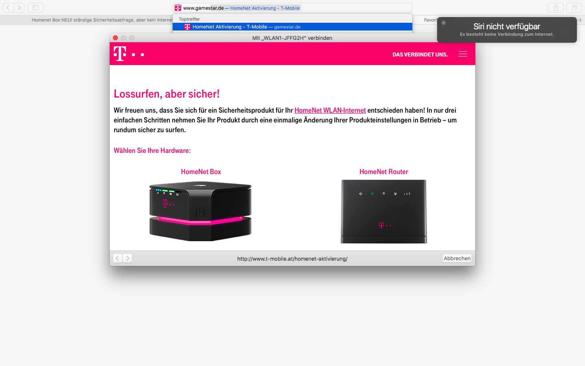

{kind=link}
Ehm jetzt komme ich durcheinander. Router? Hast du hinter der Box noch einen Router stehen? Oder hattest du mal einen Router?
Sorry für die vielen Fragen, aber ich versuche mir gerade ein Bild über dein Problem zu machen

Lg
Hallo, ich habe die neue Box bereits Installiert und laut Anleitung aktiviert (Erstinstallation) jetzt fragt er mich ständig egal mit welchem Gerät ich mich verbinde nach der Installation bzw. Sicherheitsaktivierung gut dann wähle ich mein Produkt aus, man muss auch dazu sagen dass ich hier nur wenn ich die IP vom Modem und nicht von der Box nehme in die Installation komme.
Ich habe ein Netz und W-Lan ist verbunden aber ich kann nichts aufrufen sobald ich eine Internetseite öffne kommt wieder die T-Mobile Seite und es beginnt von vorne ich komme dann wieder in die Systemeinstellungen und dass wars.
Gibts hier irgend eine Idee woran es scheitert?
PS.: direkt mit dem LanKabel geht auch nichts.
Hello,
d.h du hast die Box und dahinter steht ein Modem?
Lg
Hey, nein ich hänge direkt an der Box
Okay, dann war deine Erklärung ein wenig verwirrend ... Hast du schon mal versucht die Box zurückzusetzen auf die Werkseinstellungen?
ja auch schon probiert immer der selbe Fehler bzw. Problem ich komme wie gesagt in die Admineinstellungen der Box rein ist auch alles OK. Und sobald ich eine Seite öffne kommt wieder die TM Seite und ich soll die Box mit nur 3 Schritten aktivieren.
Ich hänge einen Screen mal an wie die Seite aussieht welche kommt, und hier müsste man ja normal die Box wählen da ich ja diese habe nur ist dort die falsche IP drinnen da die neue Box die selbe IP hat wie der Router 
Ehm jetzt komme ich durcheinander. Router? Hast du hinter der Box noch einen Router stehen? Oder hattest du mal einen Router?
Sorry für die vielen Fragen, aber ich versuche mir gerade ein Bild über dein Problem zu machen

Lg
nein nur die Box, wenn du bei der Abfrage auf die Box klickst zum aktivieren kommt folgendes:
Fügen Sie
192.168.1.1/
in Ihre Browserzeile ein, um sich mit dem HomeNet WLAN zu verbinden und die Konfiguration zu starten.
Geben Sie Ihren Benutzernamen und Ihr Passwort ein.
Wenn noch kein eigenes Passwort definiert wurde, lautet es „admin“.
Beim Router kommt:
Fügen Sie
http://192.168.8.1/
in Ihre Browserzeile ein, um sich mit dem HomeNet WLAN zu verbinden und die Konfiguration zu starten.
Geben Sie Ihren Benutzernamen und Ihr Passwort ein.
Wenn noch kein eigenes Passwort definiert wurde, lautet es „admin“.
Ich muss aber auf den Router klicken weil die neue Box die IP vom Router hat und nicht von der Box.
Alles klar, jetzt verstehe ich was du meinst
 Und wenn du dann die IP vom Router eingibst kannst du dich auch einloggen? Also kommst du zum Admin Login der Box?
Und wenn du dann die IP vom Router eingibst kannst du dich auch einloggen? Also kommst du zum Admin Login der Box?
Ich habe den Fehler gefunden denke ich, man muss jetzt nicht wie in der Beschreibung die 3 Schritte durchmachen da es bei der neuen Box anscheinend nur 2 Schritte sind bei der Profilverwaltung auf LTE Profil wechseln, und jetzt gehts

DANKE DIR FÜR DEINE BEMÜHUNGEN

Sehr gut, genau dort wollte ich dich hinlotsen
 Also zumindest in die Profileinstellungen.
Also zumindest in die Profileinstellungen.
Super, dass du es hinbekommen hast

Gerne, dafür sind wir ja da.